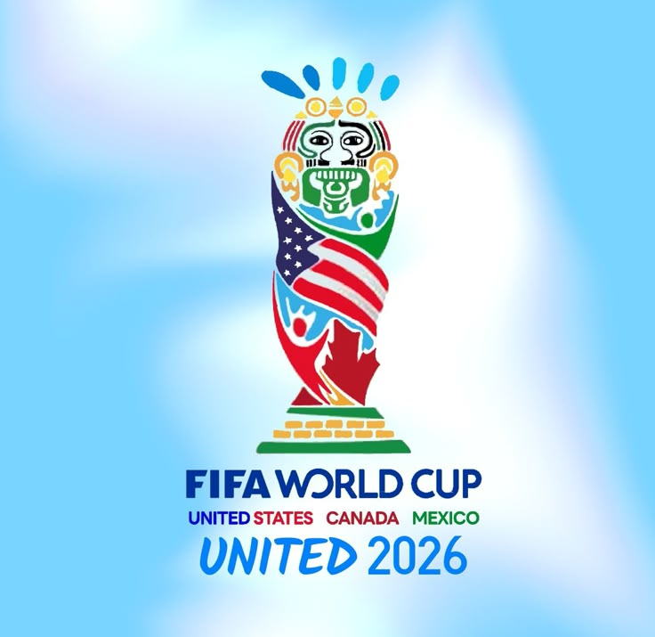

Então vamos conversar

A Copa do Mundo FIFA de 2026 marcou uma mudança profunda no maior torneio de futebol do planeta, trazendo o maior formato da história da competição e uma estrutura compartilhada inédita.
A principal alteração esteve na expansão do número de participantes. Nas edições anteriores, a competição contava com 32 seleções divididas em oito grupos. Em 2026, o torneio passou a reunir 48 países, organizados em doze grupos de quatro equipes. Com essa mudança, avançaram para o mata-mata os dois melhores de cada grupo e também os oito melhores terceiros colocados. Isso exigiu uma etapa eliminatória a mais antes das oitavas de final, chamada de dezesseis-avos de final, fazendo com que o total de partidas saltasse de 64 para 104 jogos ao longo da competição.
Outro ponto marcante foi a realização conjunta por três nações: Canadá, Estados Unidos e México. A logística envolveu 16 cidades-sede espalhadas pela América do Norte, combinando a tradição de palcos históricos com arenas de altíssima tecnologia. O Estádio Azteca, na Cidade do México, fez história ao se tornar o primeiro a receber jogos em três edições de Copa do Mundo, enquanto a grande final teve como palco o MetLife Stadium, na região metropolitana de Nova York.
A grande final coroou a Espanha como a grande campeã da Copa do Mundo de 2026. A seleção espanhola conquistou seu bicampeonato mundial ao vencer a Argentina por 1 a 0, com um gol marcado por Ferran Torres durante a prorrogação. O pódio da competição terminou com a Argentina em segundo lugar e a Inglaterra na terceira posição.